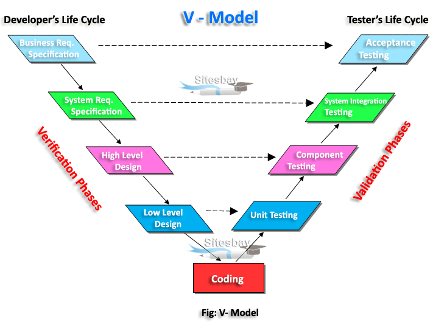
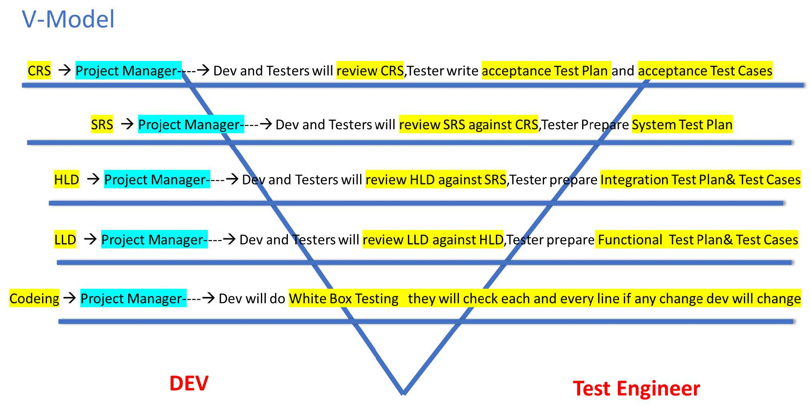

Manual Testing - V Model
V - Model
 Advantages of V Model
Testing is involved in each and every phase.
Disadvantages of V Model
- Documentation is more.
- Initial investment is more.
Verification V/S Validation
Verification checks whether we are building the right product
- Focus on Documentation
- Verification typically involves
- Reviews
- Walkthroughs
- Inspections
2. Verification Techniques or Static Testing Techniques
2.1. Reviews
Conducts on documents to ensure Correctness and Completeness
- Requirement Reviews
- Design Reviews
- Code Reviews
- Test Plan Reviews
- Test Cases Reviews etc..
2.2. Walkthrough
- It is informal review
- Author reads the documents or code and discuss with peers.
- It is not preplanner and can be done whenever required.
- Also, walkthrough does not have minutes of the meet.
2.3. Inspection
- It’s a most formal review type
- In which at least 3-8 people will sit in the meeting 1-reader, 2-writer, 3-moderator plus concerned.
- Inspection will have a proper schedule which will be intimated via E-Mail to the concerned developer/ Tester.
Validation checks whether we are building the product right
- Takes place after verifications are completed.
- Focus on Software
- Validation typically involves actual testing - Unit Testing, Integration, System Testing, User Acceptance Testing